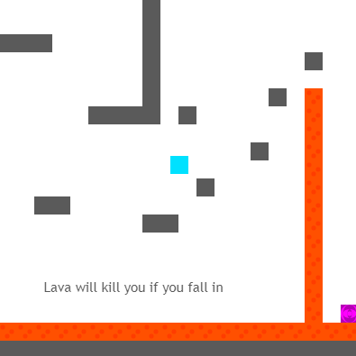
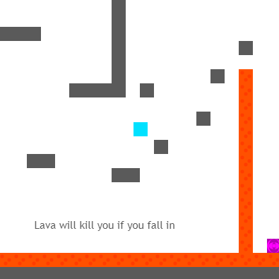

Letter Recognition AI, Image Processor, and Word Search Solver | 2022

1/3
Letter Recognition AI - Java

2/3
Letter Recognition AI - Java

3/3
Letter Recognition AI - Java
In my senior year, I took a Floral Design class. While the class was fun, I never liked when we were assigned word searches
because I thought they were boring, tedious, and not very educational, so I began thinking about other ways of solving them.
After a week or so, I had managed to create a basic prototype that recursively iterated through the search grid and matched it with
possible answers from the word bank. However, I encountered a problem: while it was still faster than solving the wordsearch by hand,
manually typing in the search grid was still somewhat lengthy.
I had recently taken a summer course on machine learning at Brown University,
so I decided to try to create a neural network to automatically input the search grid. After 2 months of work using the lecture notes
from the summer course and learning more online, I eventually created a 6-layer deep neural network entirely from scratch in Java capable of
recognizing letters from an image of the search grid with a 95% accuracy rate, allowing me to solve wordsearches in a few seconds with only
the word bank and a picture of the search grid.
Portfolio Website | 2023
As I started learning more about JS, I discovered the potential of using JS in webpages and began learning the basics of HTML/CSS from Khan Academy. When I finished my Word Search AI project, I wanted to share cool projects and games I made, so I decided I wanted to create a website. While I initially thought about using a website builder, I didn't like the lack of flexibility in pre-made templates and wanted to challenge myself, so I decided to dive deeper and learn more about HTML and CSS to create a website from scratch. While learning about the more complex elements of HTML/CSS and web design was challenging, I found the experience of learning, testing, and tinkering to be a rewarding process.
Pomodoro Timer Chrome Extension | 2023

1/4

2/4

3/4

4/4
By creating my portfolio website, I learned many new concepts and applications of HTML/CSS/JS and started feeling more confident in the language.
After my brother suggested making a pomodoro timer, a productivity tool that alternates between work and rest time to help users focus,
I became interested in making a Chrome Extension since it also used HTML/CSS/JS.
While creating the front-end of the extension wasn't too hard
due to my previous experience making the portfolio website, I quickly discovered the challenges in learning the intricacies of extension service workers,
content scripts, and the Chrome API, especially due to the difficulty of finding up-to-date information online with the update to Manifest V3.
However, by browsing online forums and reading through the Chrome API documentation, I managed to piece together my Pomodoro Chrome Extension,
learning many new things about Chrome Extensions and back-end programming in the process.
JavaScript Minigames | 2017-2019


 

As someone who enjoys playing video games, I've always been fascinated by the interactivity and creativity of the concept.
When I began learning the basics of programming and JS in elementary school, I began wondering if I could do the same.
By making incremental improvements on previous projects and continuing to learn through online forums and documentation,
I began creating my own projects in middle school, programming my own original minigames as well as recreations of other games.
The process of creating, learning, and improving inspired me to pursue computer science more seriously,
allowing me to continue with more complex programming, eventually leading to my decision to major in CS at UT.
Click images to play